<meta charset="utf-8">
<title>Matchday Club App</title>
<meta name="claude:viewport-fit-sides" content="cover">
<link rel="preconnect" href="https://fonts.googleapis.com">
<link rel="preconnect" href="https://fonts.gstatic.com" crossorigin>
<link rel="stylesheet" href="https://fonts.googleapis.com/css2?family=Anton&family=Inter:wght@400;500;600;700&family=Source+Serif+4:ital,wght@1,400;1,600&display=swap">
<style>
  /* Layout: a printed matchday programme. Masthead rule, then feature "pages" that pair a phone screen with plain-English copy. */
  :root {
    --paper: #F3EFE9; --paper-2: #E9E3D8; --ink: #0E3B2E; --pitch: #1F6B4F; --gold: #B8871F; --muted: #55625C; --rule: #CFC6B6;
    --phone-edge: #0B2A21;
    --display: Anton, Impact, "Arial Narrow", sans-serif;
    --body: Inter, system-ui, -apple-system, "Segoe UI", Roboto, sans-serif;
    --serif: "Source Serif 4", Georgia, serif;
  }
  @media (prefers-color-scheme: dark) { :root:not([data-theme="light"]) {
    --paper: #0C1F19; --paper-2: #13291F; --ink: #ECE6DC; --pitch: #8FD1B0; --gold: #E0B54A; --muted: #A3B2AA; --rule: #2C4238; --phone-edge: #000; color-scheme: dark; } }
  :root[data-theme="dark"] {
    --paper: #0C1F19; --paper-2: #13291F; --ink: #ECE6DC; --pitch: #8FD1B0; --gold: #E0B54A; --muted: #A3B2AA; --rule: #2C4238; --phone-edge: #000; color-scheme: dark; }

  * { box-sizing: border-box; }
  body { margin: 0; background: var(--paper); color: var(--ink); font: 17px/1.6 var(--body); }
  .wrap { max-width: 1040px; margin: 0 auto; padding-left: max(16px, env(safe-area-inset-left, 0px)); padding-right: max(16px, env(safe-area-inset-right, 0px)); }
  h1, h2, h3 { font-family: var(--display); font-weight: 400; text-transform: uppercase; letter-spacing: .01em; line-height: 1; text-wrap: balance; margin: 0; }
  p { margin: 0; }
  a { color: var(--pitch); }
  .caps { font-size: 12px; font-weight: 700; letter-spacing: .16em; text-transform: uppercase; color: var(--muted); }
  .serif { font-family: var(--serif); font-style: italic; }

  /* masthead */
  .mast { padding-block: 28px 0; }
  .mast-row { display: flex; justify-content: space-between; align-items: baseline; gap: 12px; flex-wrap: wrap; border-bottom: 1px solid var(--ink); padding-bottom: 8px; }
  .rule2 { border-top: 4px solid var(--ink); border-bottom: 1px solid var(--ink); height: 5px; margin-top: 10px; }

  /* hero */
  .hero { display: grid; grid-template-columns: minmax(0, 1.05fr) minmax(0, 1fr); gap: 40px; align-items: center; padding-block: 44px 56px; }
  .hero h1 { font-size: clamp(54px, 9vw, 104px); }
  .hero h1 em { font-style: normal; color: var(--pitch); }
  .hero .lede { margin-top: 18px; font-family: var(--serif); font-style: italic; font-size: 22px; line-height: 1.45; max-width: 30em; }
  .hero ul { margin: 22px 0 0; padding: 0; list-style: none; display: grid; gap: 8px; }
  .hero li { padding-left: 26px; position: relative; }
  .hero li::before { content: ""; position: absolute; left: 0; top: .55em; width: 14px; height: 3px; background: var(--pitch); }
  .hero-phones { display: flex; justify-content: center; gap: 0; position: relative; min-height: 420px; }
  .hero-phones .phone { width: 46%; max-width: 230px; }
  .hero-phones .phone:first-child { transform: rotate(-5deg) translate(14%, 6%); z-index: 1; }
  .hero-phones .phone:last-child { transform: rotate(4deg) translate(-12%, -2%); z-index: 2; }

  .phone { border: 7px solid var(--phone-edge); border-radius: 26px; overflow: hidden; background: var(--phone-edge); box-shadow: 0 18px 40px rgba(0,0,0,.18); }
  .phone img { display: block; width: 100%; height: auto; }
  .poster { border: 1px solid var(--rule); box-shadow: 0 10px 26px rgba(0,0,0,.14); }
  .poster img { display: block; width: 100%; height: auto; }

  /* section heads */
  .sec { padding-block: 56px; border-top: 4px solid var(--ink); }
  .sec-head { display: grid; grid-template-columns: auto minmax(0, 1fr); gap: 4px 20px; align-items: end; margin-bottom: 30px; }
  .sec-head .tab { font-family: var(--display); font-size: 15px; letter-spacing: .12em; background: var(--ink); color: var(--paper); padding: 4px 10px; align-self: start; margin-top: 8px; }
  .sec-head h2 { font-size: clamp(40px, 6vw, 64px); }
  .sec-head p { grid-column: 2; font-family: var(--serif); font-style: italic; font-size: 19px; color: var(--muted); max-width: 40em; }

  /* versions */
  .versions { display: grid; grid-template-columns: repeat(4, minmax(0, 1fr)); gap: 16px; }
  .ver { border: 2px solid var(--ink); padding: 18px 16px 16px; display: flex; flex-direction: column; gap: 8px; }
  .ver h3 { font-size: 30px; }
  .ver .who { font-size: 14px; color: var(--muted); }
  .ver ul { margin: 4px 0 0; padding-left: 18px; font-size: 15px; line-height: 1.5; }
  .ver.dark { background: var(--ink); color: var(--paper); }
  .ver.dark .who { color: color-mix(in srgb, var(--paper) 70%, var(--ink)); }

  .matrix-wrap { overflow-x: auto; margin-top: 30px; }
  table.matrix { width: 100%; min-width: 560px; border-collapse: collapse; font-size: 15px; font-variant-numeric: tabular-nums; }
  .matrix th, .matrix td { padding: 9px 10px; border-bottom: 1px solid var(--rule); text-align: center; }
  .matrix th:first-child, .matrix td:first-child { text-align: left; }
  .matrix thead th { font-size: 12px; letter-spacing: .14em; text-transform: uppercase; border-bottom: 2px solid var(--ink); }
  .matrix .y { color: var(--pitch); font-weight: 700; }
  .matrix .n { color: var(--rule); }

  /* feature rows */
  .feature { display: grid; grid-template-columns: 240px minmax(0, 1fr); gap: 36px; align-items: start; padding-block: 26px; border-top: 1px solid var(--rule); }
  .feature:first-of-type { border-top: 0; }
  .feature.pair { grid-template-columns: 240px 240px minmax(0, 1fr); }
  .feature h3 { font-size: 30px; margin-bottom: 10px; }
  .feature .copy { display: grid; gap: 12px; min-width: 0; }
  .feature .copy ul { margin: 0; padding-left: 20px; display: grid; gap: 6px; }
  .why { border-left: 4px solid var(--gold); padding: 6px 0 6px 14px; font-family: var(--serif); font-style: italic; font-size: 17px; }

  .gfx-grid { display: grid; grid-template-columns: repeat(4, minmax(0, 1fr)); gap: 16px; margin-top: 8px; }
  .gfx-grid figure { margin: 0; }
  .gfx-grid figcaption { margin-top: 6px; font-size: 13px; font-weight: 600; letter-spacing: .08em; text-transform: uppercase; color: var(--muted); }

  .cols3 { display: grid; grid-template-columns: repeat(3, minmax(0, 1fr)); gap: 22px; }
  .cols2 { display: grid; grid-template-columns: minmax(0, 1.4fr) minmax(0, 1fr); gap: 28px; }
  .card { border-top: 3px solid var(--ink); padding-top: 12px; display: grid; gap: 6px; align-content: start; }
  .card h3 { font-size: 24px; }
  .card p { font-size: 15.5px; }

  .steps { counter-reset: s; display: grid; gap: 0; margin: 0; padding: 0; list-style: none; }
  .steps li { counter-increment: s; display: grid; grid-template-columns: 56px minmax(0, 1fr); gap: 16px; padding-block: 16px; border-bottom: 1px solid var(--rule); }
  .steps li::before { content: counter(s); font-family: var(--display); font-size: 40px; line-height: 1; color: var(--pitch); }
  .steps b { display: block; font-size: 18px; }

  table.week { width: 100%; border-collapse: collapse; font-size: 15.5px; }
  .week td { padding: 10px 10px 10px 0; border-bottom: 1px solid var(--rule); vertical-align: top; }
  .week td:first-child { font-weight: 700; white-space: nowrap; width: 30%; }

  .faq { display: grid; grid-template-columns: repeat(2, minmax(0, 1fr)); gap: 24px 36px; }
  .faq h3 { font-family: var(--body); text-transform: none; font-weight: 700; font-size: 18px; line-height: 1.3; margin-bottom: 6px; }
  .faq p { font-size: 15.5px; color: var(--muted); }

  footer { border-top: 4px solid var(--ink); padding-block: 22px 40px; font-size: 14px; color: var(--muted); }

  @media (max-width: 860px) {
    .hero { grid-template-columns: minmax(0, 1fr); padding-block: 30px 40px; }
    .hero-phones { min-height: 0; }
    .versions { grid-template-columns: repeat(2, minmax(0, 1fr)); }
    .feature, .feature.pair { grid-template-columns: minmax(0, 1fr) minmax(0, 1fr); gap: 16px 20px; }
    .feature .copy { grid-column: 1 / -1; }
    .feature:not(.pair) .phone { grid-column: 1; }
    .gfx-grid { grid-template-columns: repeat(2, minmax(0, 1fr)); }
    .cols3, .cols2, .faq { grid-template-columns: minmax(0, 1fr); }
    .sec-head { grid-template-columns: minmax(0, 1fr); }
    .sec-head p { grid-column: 1; }
  }
  @media (max-width: 480px) {
    .versions { grid-template-columns: minmax(0, 1fr); }
    .feature:not(.pair) { grid-template-columns: minmax(0, 1fr); }
    .feature:not(.pair) .phone { max-width: 260px; }
  }
  @media print {
    .sec { break-inside: auto; } .feature, .ver, .card, .faq > div, .gfx-grid figure { break-inside: avoid; }
    .phone, .poster { box-shadow: none; }
  }
</style>

<header class="mast wrap">
  <div class="mast-row"><span class="caps">The Matchday App</span><span class="caps">A guide for clubs</span></div>
  <div class="rule2"></div>
</header>

<main>
<section class="wrap hero">
  <div>
    <h1>Your club's <em>matchday programme</em>, on every phone</h1>
    <p class="lede">One app for players, supporters and the manager. Next match, squad, results, match reports, the table and the stats, in the club's colours, behind the club's own passwords.</p>
    <ul>
      <li>Installs to the home screen like a normal app. No app store.</li>
      <li>Works at the ground with poor signal.</li>
      <li>Players, supporters, manager and admin each see their own version.</li>
      <li>Runs on free hosting. No monthly fee.</li>
    </ul>
  </div>
  <div class="hero-phones" aria-hidden="true">
    <div class="phone">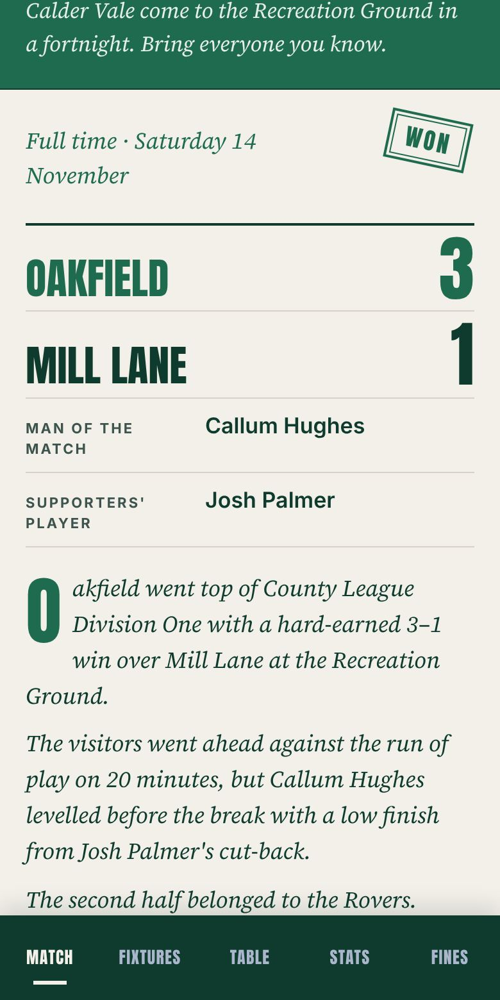</div>
    <div class="phone">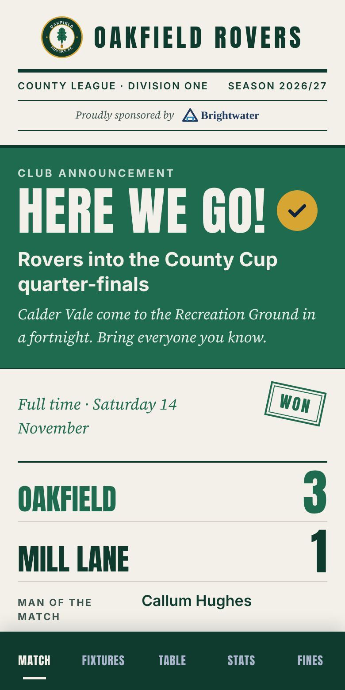</div>
  </div>
</section>

<section class="sec wrap" id="versions">
  <div class="sec-head"><span class="tab">01</span><h2>Four versions, one app</h2>
    <p>Everyone opens the same link. The password they type decides what they see. Capitals don't matter, and the phone remembers it.</p></div>
  <div class="versions">
    <div class="ver"><span class="caps">Password 1</span><h3>Players</h3><p class="who">The squad</p>
      <ul><li>Meet time and kick-off</li><li>Add games to the calendar</li><li>Fines and who owes what</li><li>Match previews and reports</li></ul></div>
    <div class="ver"><span class="caps">Password 2</span><h3>Supporters</h3><p class="who">Families, friends, regulars</p>
      <ul><li>League positions for each game</li><li>Toilets and refreshments at each ground</li><li>A thank-you from the club on reports</li><li>No fines, no meet times</li></ul></div>
    <div class="ver"><span class="caps">Password 3</span><h3>Manager</h3><p class="who">Manager and coaches</p>
      <ul><li>Everything players see</li><li>Squad picker</li><li>Ready-to-paste WhatsApp messages</li><li>Eight social media graphics</li></ul></div>
    <div class="ver dark"><span class="caps" style="color:inherit;opacity:.7">Password 4</span><h3>Admin</h3><p class="who">Whoever runs the app</p>
      <ul><li>Visitor numbers</li><li>A checklist of what's out of date</li><li>Who has alerts on</li><li>Passwords and invite links</li></ul></div>
  </div>

  <div class="matrix-wrap">
  <table class="matrix">
    <thead><tr><th>Feature</th><th>Players</th><th>Supporters</th><th>Manager</th><th>Admin</th></tr></thead>
    <tbody>
      <tr><td>Next match, countdown, venue and map</td><td class="y">✓</td><td class="y">✓</td><td class="y">✓</td><td class="n">–</td></tr>
      <tr><td>Squad, preview, full-time score</td><td class="y">✓</td><td class="y">✓</td><td class="y">✓</td><td class="n">–</td></tr>
      <tr><td>Meet time</td><td class="y">✓</td><td class="n">–</td><td class="y">✓</td><td class="n">–</td></tr>
      <tr><td>League positions on the match page</td><td class="n">–</td><td class="y">✓</td><td class="n">–</td><td class="n">–</td></tr>
      <tr><td>Away ground toilets and refreshments</td><td class="n">–</td><td class="y">✓</td><td class="y">✓</td><td class="n">–</td></tr>
      <tr><td>Add to calendar</td><td class="y">✓</td><td class="n">–</td><td class="y">✓</td><td class="n">–</td></tr>
      <tr><td>Fixtures, results and match reports</td><td class="y">✓</td><td class="y">✓</td><td class="y">✓</td><td class="n">–</td></tr>
      <tr><td>League table and player stats</td><td class="y">✓</td><td class="y">✓</td><td class="y">✓</td><td class="n">–</td></tr>
      <tr><td>Fines</td><td class="y">✓</td><td class="n">–</td><td class="y">✓</td><td class="n">–</td></tr>
      <tr><td>Squad picker, messages, graphics</td><td class="n">–</td><td class="n">–</td><td class="y">✓</td><td class="n">–</td></tr>
      <tr><td>Visits, site check, history, alerts, passwords</td><td class="n">–</td><td class="n">–</td><td class="n">–</td><td class="y">✓</td></tr>
      <tr><td>View the app as any other group</td><td class="n">–</td><td class="n">–</td><td class="n">–</td><td class="y">✓</td></tr>
    </tbody>
  </table>
  </div>
</section>

<section class="sec wrap" id="match">
  <div class="sec-head"><span class="tab">02</span><h2>The Match tab</h2>
    <p>The first thing anyone sees. It changes through the week: club news, then Saturday's score, then the next game.</p></div>

  <div class="feature">
    <div class="phone"></div>
    <div class="copy">
      <h3>Club announcements</h3>
      <p>A "Here we go!" banner across the top for big news: a cup run, a signing, a presentation night. It can carry a button to a link, set off confetti, and it disappears by itself on the date you choose.</p>
    </div>
  </div>

  <div class="feature">
    <div class="phone"></div>
    <div class="copy">
      <h3>Full time</h3>
      <ul>
        <li>After a game, the score goes to the top with a stamp: won, drew, lost, abandoned or postponed.</li>
        <li>Man of the Match and the Supporters' Player, with the start of the match report and a button to the full report.</li>
        <li>A win throws gold confetti.</li>
        <li>It stays until the Tuesday after the game, then steps aside for the next fixture.</li>
      </ul>
    </div>
  </div>

  <div class="feature pair">
    <div class="phone">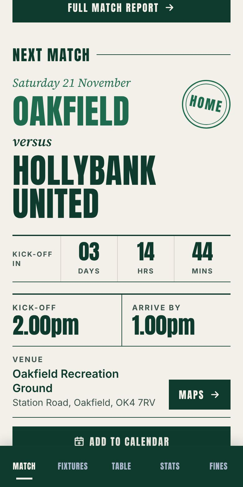</div>
    <div class="phone">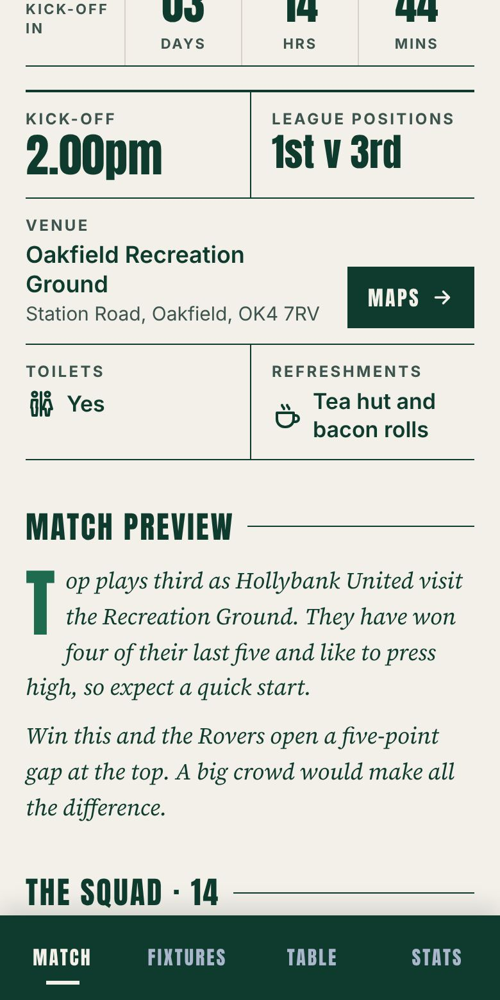</div>
    <div class="copy">
      <h3>Next match</h3>
      <ul>
        <li>Opponent, date, home or away stamp, and a live countdown to kick-off that switches to "Game on now".</li>
        <li>Kick-off and meet time for players. Supporters see both teams' league positions instead (left: players; right: supporters).</li>
        <li>Venue and postcode with a one-tap <b>Maps</b> button.</li>
        <li>For supporters and the manager, whether the ground has toilets and refreshments, with a tip such as "bring a drink".</li>
        <li>Players can add the game to their calendar on iPhone, Android, Outlook or Google.</li>
        <li>A short match preview and the squad, in alphabetical order with captain and keeper marked.</li>
      </ul>
      <p class="why">Ends the "what time are we meeting?" messages on a Saturday morning.</p>
    </div>
  </div>
</section>

<section class="sec wrap" id="fixtures">
  <div class="sec-head"><span class="tab">03</span><h2>Fixtures, results, table, stats</h2>
    <p>The season at a glance, kept in the club's own words and colours.</p></div>

  <div class="feature pair">
    <div class="phone">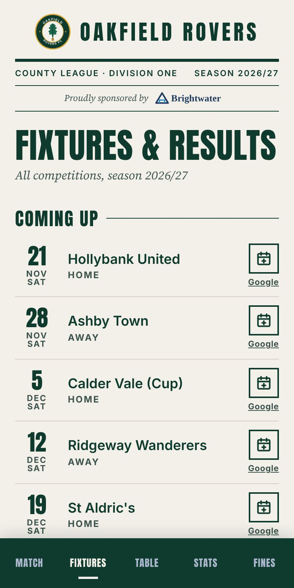</div>
    <div class="phone">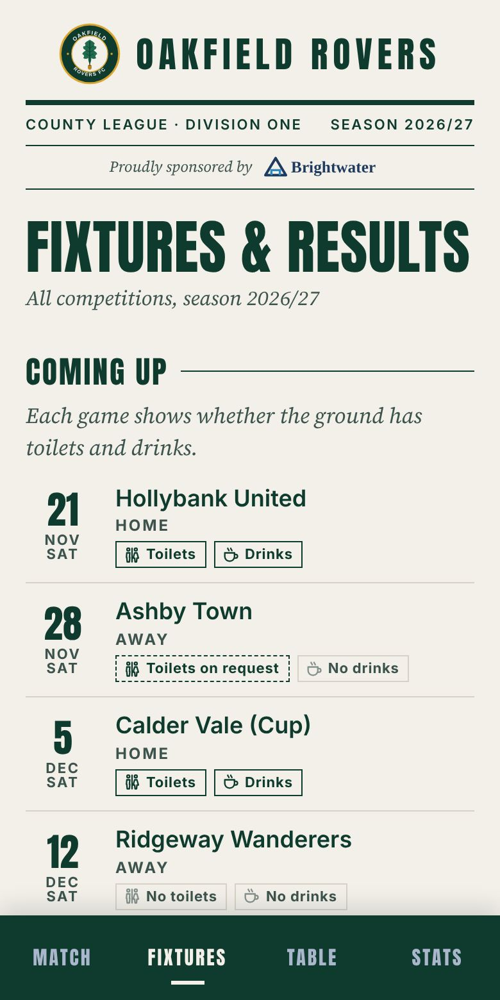</div>
    <div class="copy">
      <h3>Fixtures and results</h3>
      <ul>
        <li>Every game coming up, home or away, league or cup.</li>
        <li>Players get a calendar button on each game and an <b>Add all to calendar</b> button for the season.</li>
        <li>Supporters see toilet and drinks information for every ground on the list.</li>
        <li>Each result shows the score with a W, D or L, and opens the full match report.</li>
      </ul>
    </div>
  </div>

  <div class="feature pair">
    <div class="phone">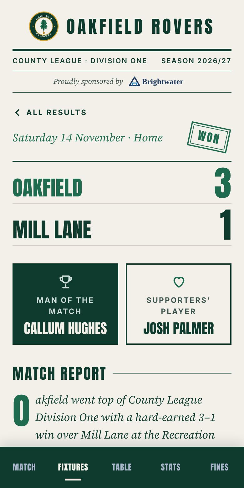</div>
    <div class="phone">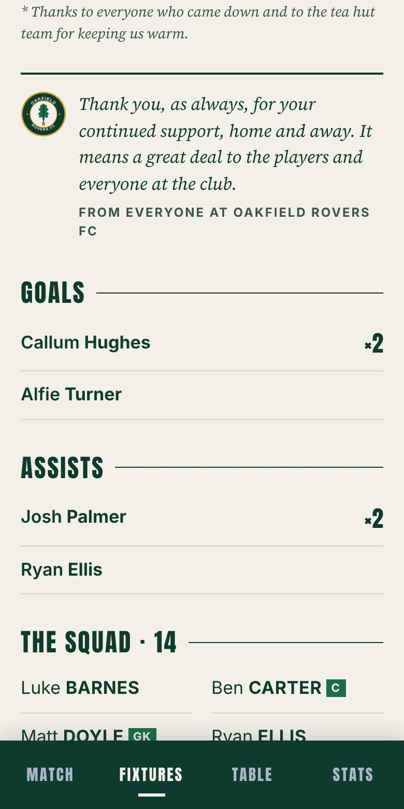</div>
    <div class="copy">
      <h3>Match reports</h3>
      <ul>
        <li>Score, both awards, the written report, goals, assists and the squad that played.</li>
        <li>Supporters' copies end with a thank-you note from the club, with the crest.</li>
        <li>Every past game keeps its report, so the season builds into a record.</li>
      </ul>
    </div>
  </div>

  <div class="feature pair">
    <div class="phone">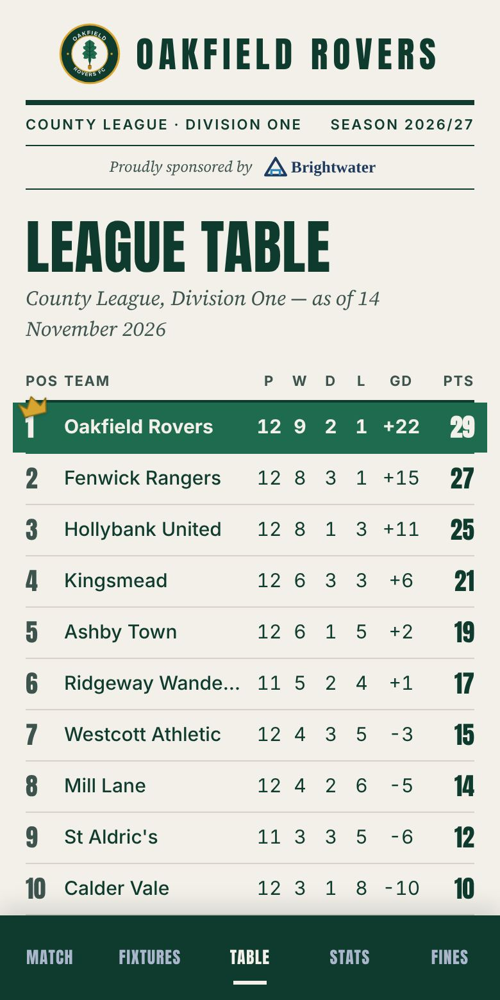</div>
    <div class="phone">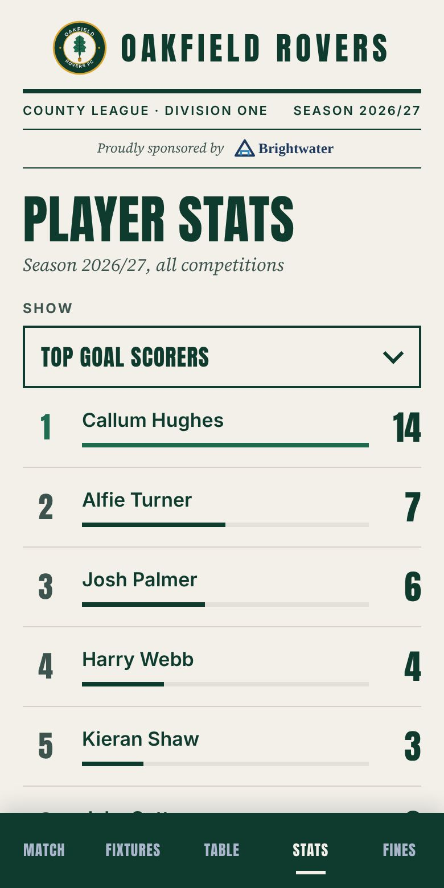</div>
    <div class="copy">
      <h3>League table and player stats</h3>
      <ul>
        <li>The full table with the club's row highlighted, and a gold crown when the club is top.</li>
        <li>Points deductions marked, with a link to the official table on FA Full-Time.</li>
        <li>Top scorers, top assists, appearances this season, and all-time appearances with the club record.</li>
      </ul>
      <p class="why">Players check their numbers. That's what keeps them opening the app.</p>
    </div>
  </div>

  <div class="feature">
    <div class="phone">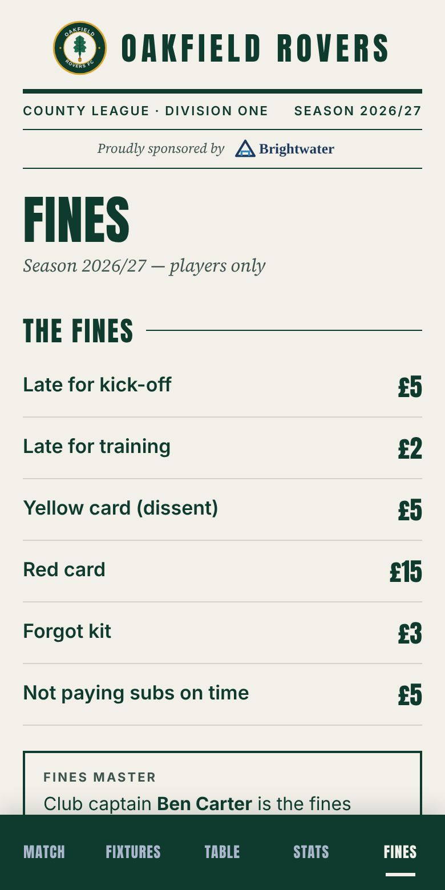</div>
    <div class="copy">
      <h3>Fines</h3>
      <p>The club's fines and what each costs, and who the fines master is and how to appeal. Only players and the manager see it. Supporters' copies don't contain it at all. Clubs that don't do fines simply leave it out and the tab disappears.</p>
    </div>
  </div>
</section>

<section class="sec wrap" id="manager">
  <div class="sec-head"><span class="tab">04</span><h2>Manager tools</h2>
    <p>The jobs a manager does on a phone every week, done in a few taps.</p></div>

  <div class="feature pair">
    <div class="phone">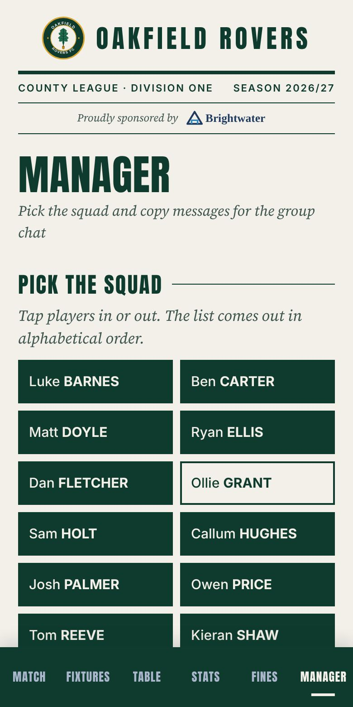</div>
    <div class="phone">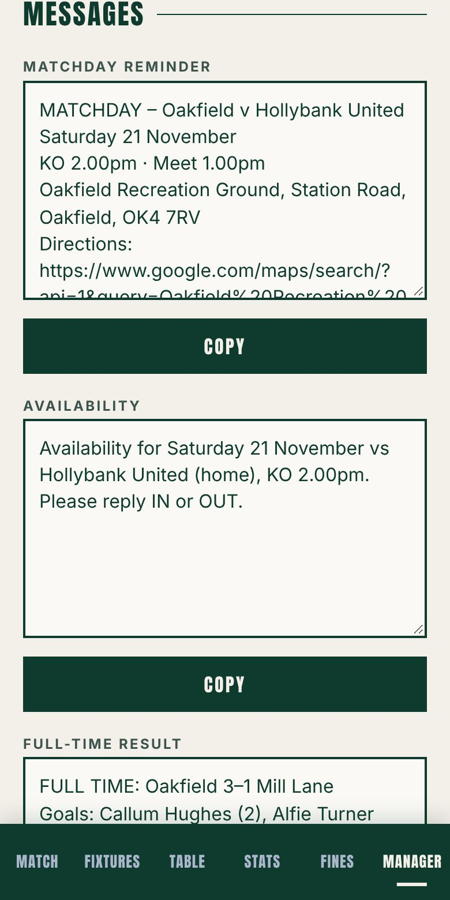</div>
    <div class="copy">
      <h3>Squad picker and messages</h3>
      <ul>
        <li>Tap players in or out, choose a captain and keeper, and the squad message writes itself, numbered and in alphabetical order, with meet time, venue and kick-off.</li>
        <li>Four more ready-to-copy messages: matchday reminder with a directions link, availability ("reply IN or OUT"), the full-time result with scorers and awards, and a fines reminder listing who owes what.</li>
        <li>One <b>Copy</b> button each, then paste into the WhatsApp group.</li>
      </ul>
    </div>
  </div>

  <div class="feature">
    <div class="phone">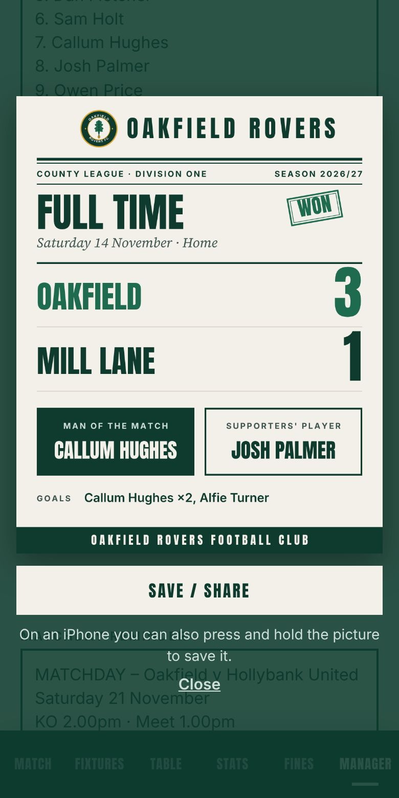</div>
    <div class="copy">
      <h3>Graphics for social media</h3>
      <p>Eight Instagram-sized pictures, drawn on the phone from the app's own data in the club's colours, with the crest. Tap one, then <b>Save / Share</b> straight to Instagram, Facebook or WhatsApp. No design software, no waiting for someone to make them.</p>
    </div>
  </div>
  <div class="gfx-grid">
    <figure><div class="poster">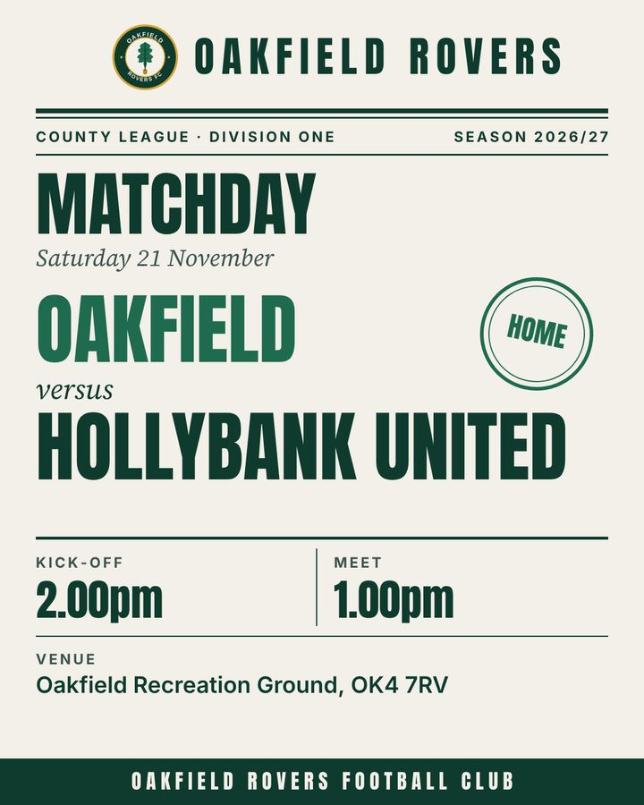</div><figcaption>Matchday</figcaption></figure>
    <figure><div class="poster">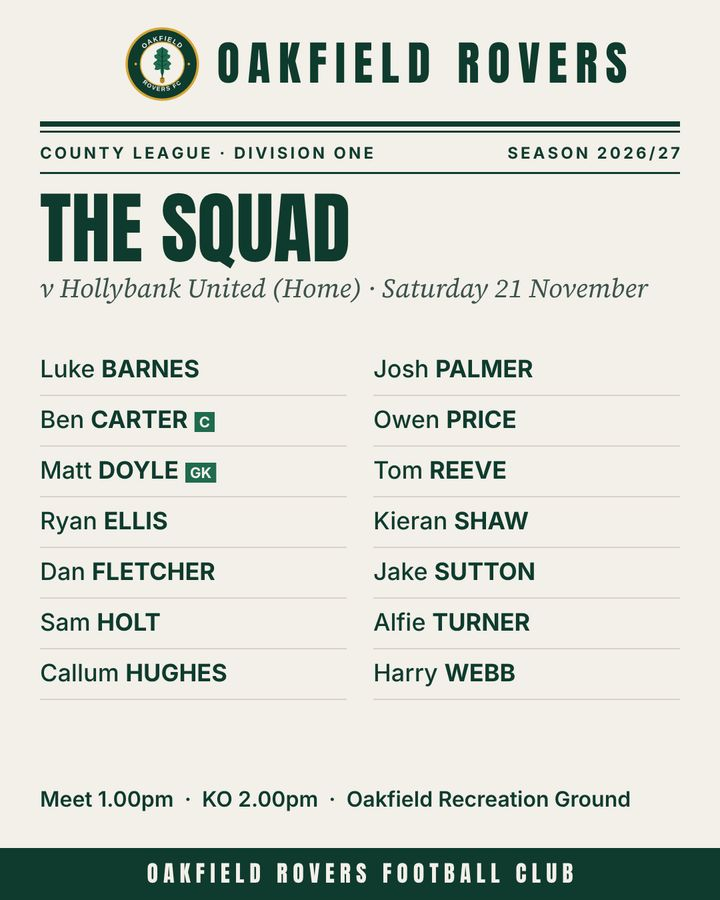</div><figcaption>The squad</figcaption></figure>
    <figure><div class="poster">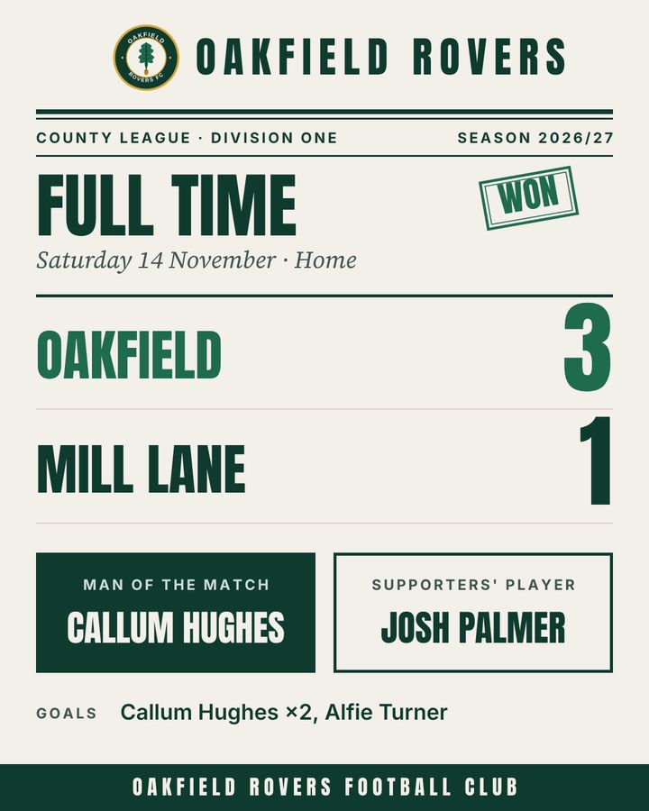</div><figcaption>Full time</figcaption></figure>
    <figure><div class="poster">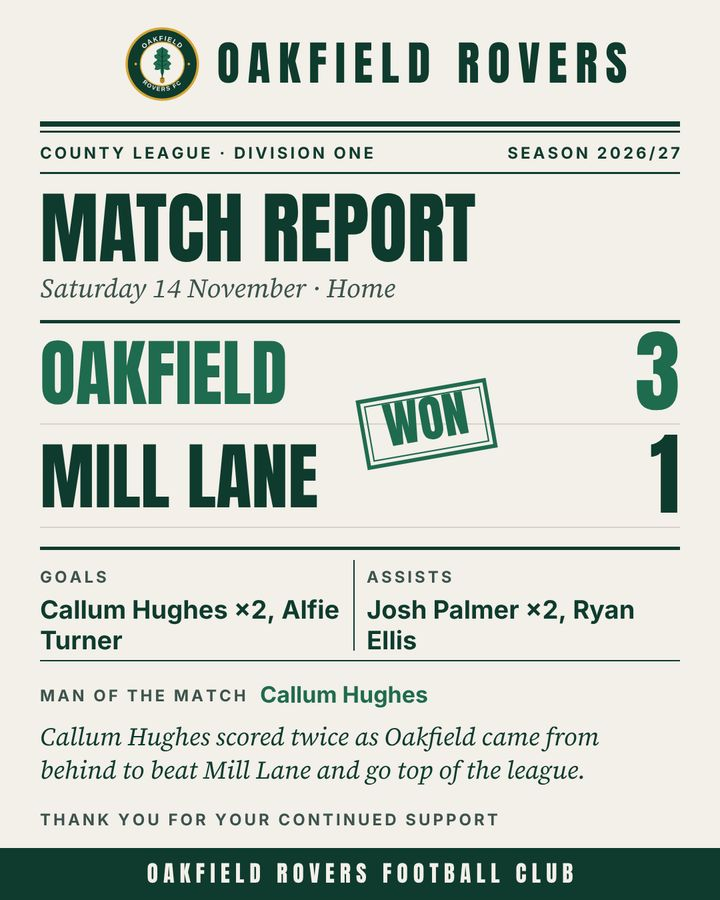</div><figcaption>Match report</figcaption></figure>
    <figure><div class="poster">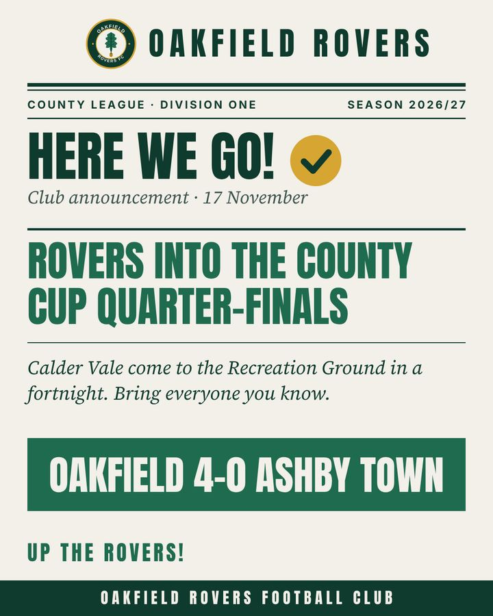</div><figcaption>Here we go!</figcaption></figure>
    <figure><div class="poster">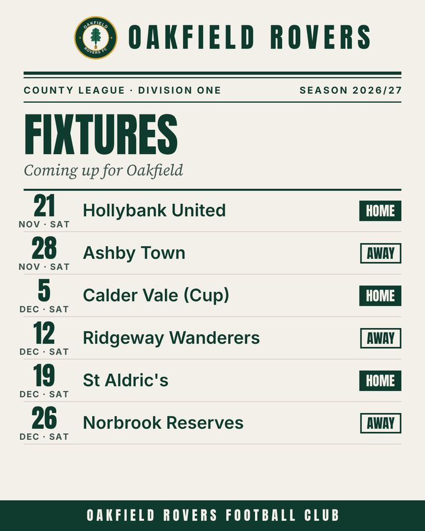</div><figcaption>Fixtures</figcaption></figure>
    <figure><div class="poster">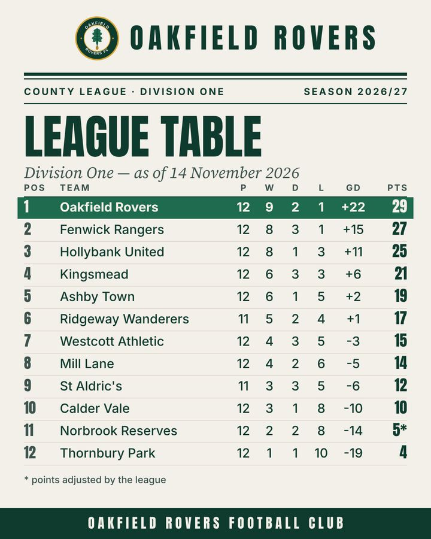</div><figcaption>League table</figcaption></figure>
    <figure><div class="poster">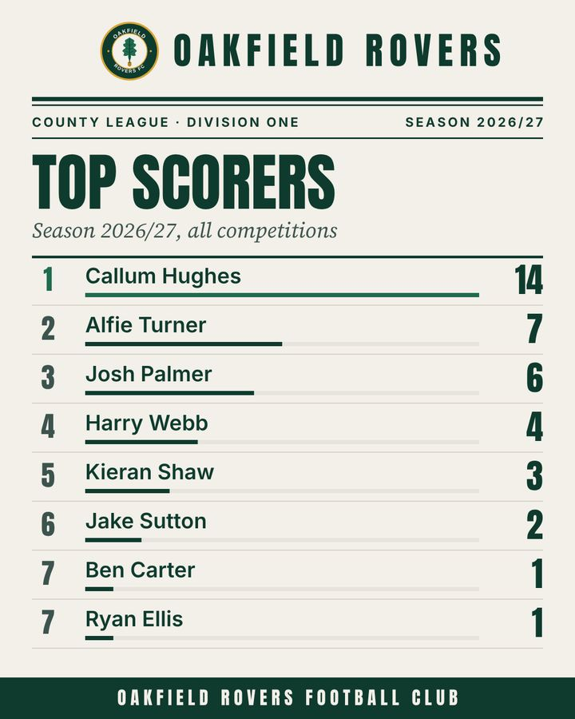</div><figcaption>Top scorers</figcaption></figure>
  </div>
</section>

<section class="sec wrap" id="admin">
  <div class="sec-head"><span class="tab">05</span><h2>Admin</h2>
    <p>For the one person who keeps the app up to date. Their own visits are never counted.</p></div>

  <div class="feature pair">
    <div class="phone">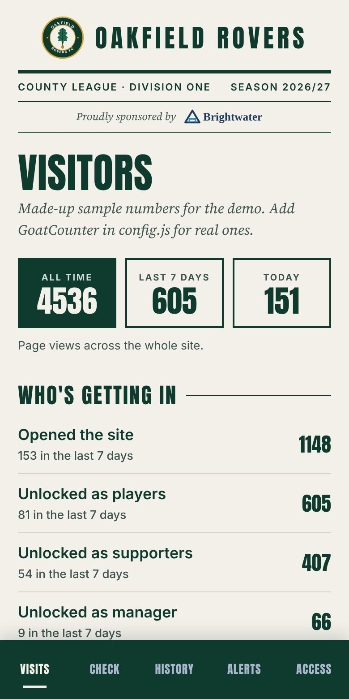</div>
    <div class="phone">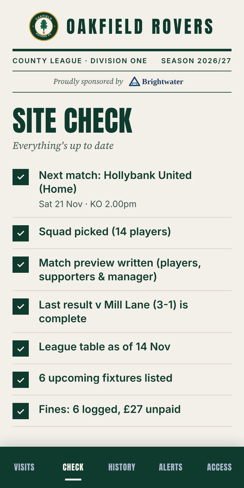</div>
    <div class="copy">
      <h3>Visits and site check</h3>
      <ul>
        <li><b>Visits:</b> views today, this week and all time; how many people opened it as players, supporters or manager; how many stopped at the password screen; visits by day; the busiest days; the most-viewed tabs; which graphics the manager made.</li>
        <li><b>Check:</b> a to-do list that spots what's out of date. A next match in the past, no kick-off time, no squad with the game a week away, a result missing its scorers or report, a table older than the last result, unpaid fines.</li>
      </ul>
    </div>
  </div>

  <div class="feature pair">
    <div class="phone">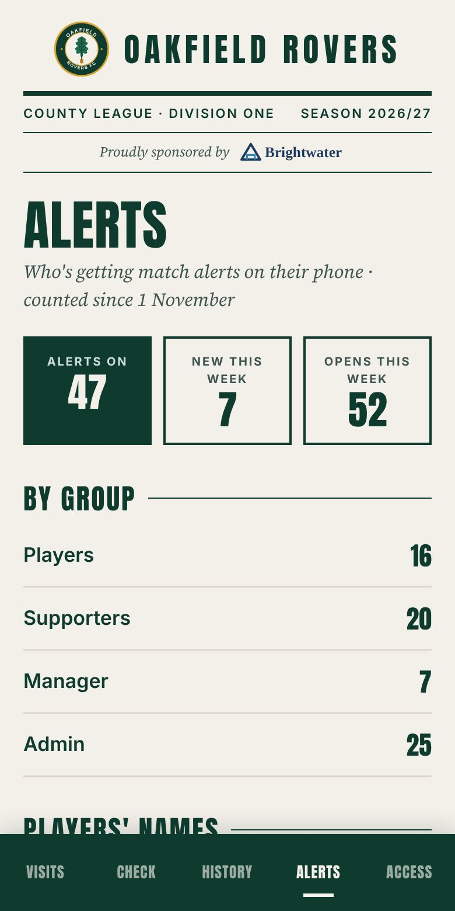</div>
    <div class="phone">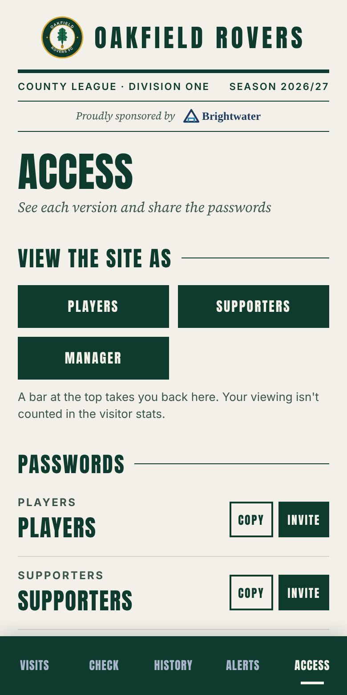</div>
    <div class="copy">
      <h3>Alerts and access</h3>
      <ul>
        <li><b>Alerts:</b> how many phones have match alerts on, split by players, supporters and manager, and the names of players who chose to say who they are.</li>
        <li><b>Access:</b> view the app exactly as players, supporters or the manager see it. Copy any password, or tap <b>Invite</b> to copy the link and password ready for WhatsApp.</li>
        <li><b>History:</b> a list of every change made to the app, newest first.</li>
      </ul>
    </div>
  </div>
</section>

<section class="sec wrap" id="app">
  <div class="sec-head"><span class="tab">06</span><h2>Feels like a real app</h2>
    <p>It's a website, so it works on every phone, but once it's on the home screen nobody can tell the difference.</p></div>
  <div class="feature">
    <div class="phone">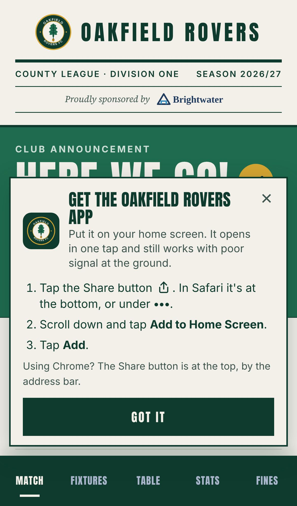</div>
    <div class="cols3">
      <div class="card"><h3>On the home screen</h3><p>A card shows each person how to add it: one tap on Android, three clear steps on iPhone. It opens full screen with the club crest as its icon.</p></div>
      <div class="card"><h3>Works without signal</h3><p>The phone keeps the last copy, so the venue and kick-off still open in a field with one bar.</p></div>
      <div class="card"><h3>Match alerts</h3><p>Optional phone notifications: squad news, a matchday reminder, full-time scores. Send to the team, supporters or everyone. A red badge shows on the icon.</p></div>
      <div class="card"><h3>Always current</h3><p>Phones pick up changes the next time the app is opened. Pull down to refresh in the installed app.</p></div>
      <div class="card"><h3>Dark mode</h3><p>Follows the phone's setting automatically, in a dark version of the club's colours.</p></div>
      <div class="card"><h3>Private</h3><p>Squad, reports and fines are encrypted. Without a password, the file is unreadable. Visitor counting uses no cookies and no personal data.</p></div>
    </div>
  </div>
  <div class="feature pair">
    <div class="phone">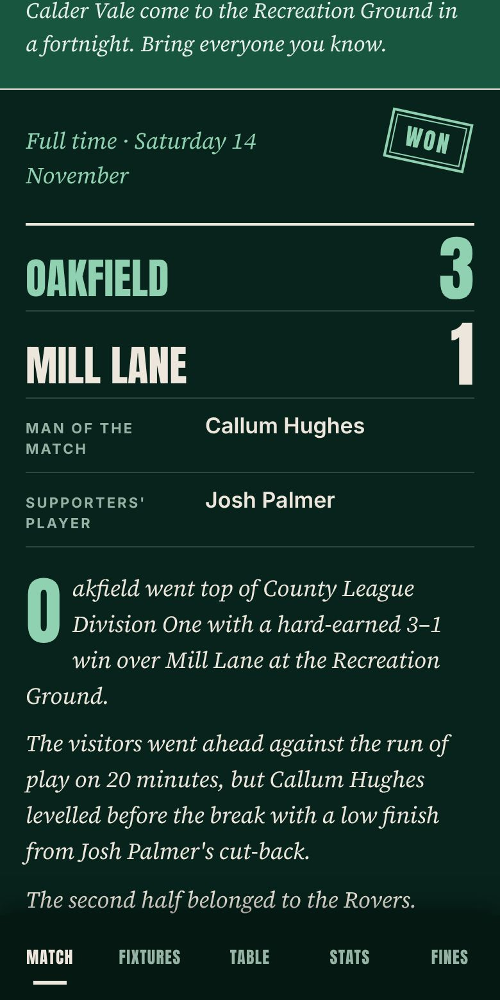</div>
    <div class="phone">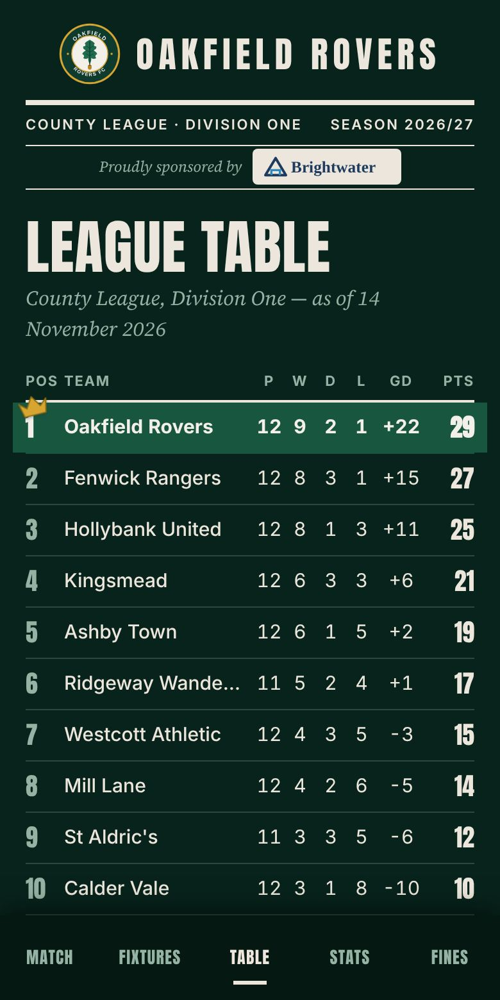</div>
    <div class="copy">
      <h3>In the club's colours</h3>
      <p>The club picks four colours and a crest. Every screen, button and graphic follows them, in light and dark mode. Add the main sponsor's logo to the top of every page and the loading screen, linked to their website.</p>
      <p>The examples in this guide use a made-up club, Oakfield Rovers, in green and gold.</p>
    </div>
  </div>
</section>

<section class="sec wrap" id="running">
  <div class="sec-head"><span class="tab">07</span><h2>Running it week to week</h2>
    <p>About ten minutes after each game.</p></div>
  <div class="cols2">
    <table class="week">
      <tr><td>Fixtures out</td><td>Add the games and the next match details.</td></tr>
      <tr><td>Squad picked</td><td>The manager sends the squad message; add the names.</td></tr>
      <tr><td>After the game</td><td>Score, scorers, assists, awards and a short report. Stats and next match move on.</td></tr>
      <tr><td>Table changes</td><td>Copy the latest table from FA Full-Time.</td></tr>
      <tr><td>Big news</td><td>Add a "Here we go!" announcement with an end date.</td></tr>
    </table>
    <div class="card"><h3>Who does it</h3><p>One volunteer with a laptop, using a simple form that locks the data with the passwords. The admin Check tab says what's missing. Updates can also be automated, for example from a weekly email, if the club wants that.</p></div>
  </div>
</section>

<section class="sec wrap" id="setup">
  <div class="sec-head"><span class="tab">08</span><h2>Getting your club set up</h2>
    <p>What the club provides, and what happens next.</p></div>
  <ol class="steps">
    <li><div><b>Send the basics</b>Club name, crest, colours, league and division, manager, chairman and assistant, and the sponsor's logo if there is one.</div></li>
    <li><div><b>Send the season so far</b>Fixtures, results, the squad, goals, assists and appearances. A screenshot of FA Full-Time is fine.</div></li>
    <li><div><b>Choose four passwords</b>One each for players, supporters, the manager and the admin.</div></li>
    <li><div><b>It goes live</b>On free hosting at a web address you can share. Optional extras: visitor numbers and match alerts, both on free plans.</div></li>
    <li><div><b>Share the link</b>Post it in the players' and supporters' WhatsApp groups with the password, using the Invite button.</div></li>
  </ol>
</section>

<section class="sec wrap" id="faq">
  <div class="sec-head"><span class="tab">09</span><h2>Questions clubs ask</h2></div>
  <div class="faq">
    <div><h3>Does it cost anything?</h3><p>Hosting, visitor numbers and alerts all run on free plans at a grassroots club's size. There's no app store fee because it isn't in an app store.</p></div>
    <div><h3>Do people need to download anything?</h3><p>No. They open a link. Adding it to the home screen is optional but takes ten seconds.</p></div>
    <div><h3>iPhone and Android?</h3><p>Both, and computers too. Match alerts on iPhone need the app on the home screen and iOS 16.4 or later.</p></div>
    <div><h3>Who can see the data?</h3><p>Only people with a password, and only their version. Passwords do get passed around, so don't put in anything a club member shouldn't read.</p></div>
    <div><h3>Can we change a password?</h3><p>Yes, at any time. Everyone using the old one is asked for the new one next time they open the app.</p></div>
    <div><h3>We don't do fines. Or awards.</h3><p>Leave them out and the tab or section doesn't appear. The two awards can be renamed to whatever the club calls them.</p></div>
    <div><h3>Can it cover more than one team?</h3><p>Each team gets its own copy at its own address: first team, reserves, youth sides, women's team.</p></div>
    <div><h3>What if the signal at the ground is bad?</h3><p>The last copy is stored on the phone, so it opens anyway and catches up when the signal does.</p></div>
  </div>
</section>
</main>

<footer class="wrap">
  <p>Screens shown are from the demo version, for the made-up club Oakfield Rovers. Every name, score and number in them is invented.</p>
</footer>
